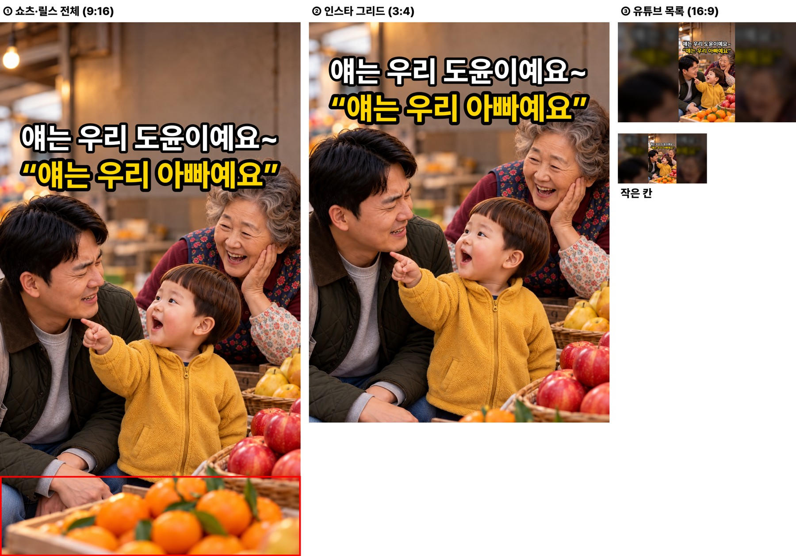
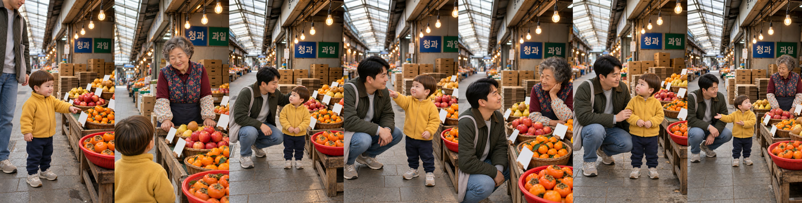
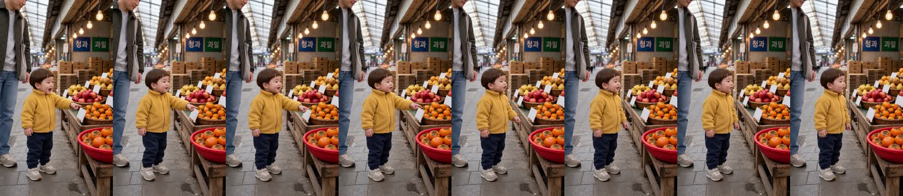
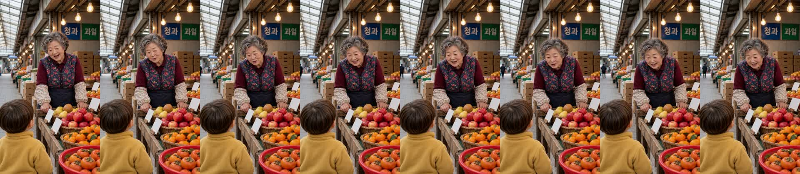
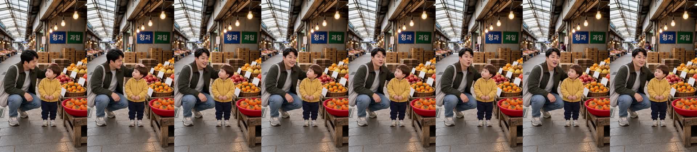
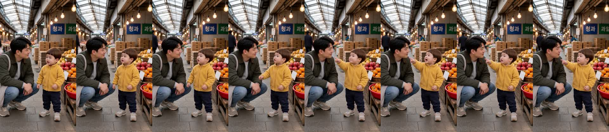
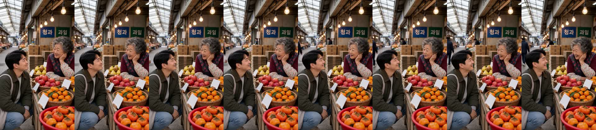
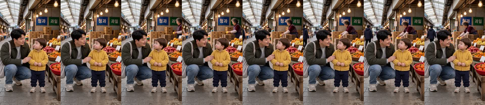
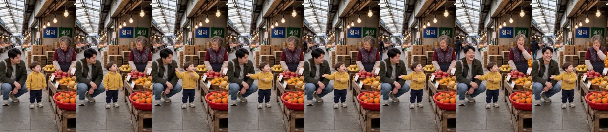

과일가게 «얘는 우리 아빠예요!» 확인 v2
doyoon-fruit-dad-001 · R16 · 20.3초 · 7컷 · D0~D8 통과 · 새 연기 방식 · 2026-10-30
이번에 고친 것
- 내용 — «얘 착해요!»·귤 엔딩을 빼고, 6번 아빠가 다정하게 바로잡기 «도윤아, 아빠한테 얘 아니야~» → 7번 도윤이가 손을 펴서 아빠를 소개 «이분은 우리 아빠예요!» → 할머니·아빠 웃음.
- 연기 방식 — 비교 컷에서 고르신 꼬미·냥아치식으로 7컷 전부 새로 찍었습니다: 컷 길이를 대사에 맞춤(3.04/3.75초, 전에는 모두 4.46초) · ReelShort 코미디 문구 삭제 · 어른 목소리 줄에 억양 모양 · 듣는 사람 지시는 짧게.
흐름
1 도윤 «할머니, 귤 주세요!» → 2 할머니 «아이고, 이 집 아기는 처음 보네~» → 3 아빠(머리 쓰다듬으며) «얘는 우리 도윤이예요~» → 4 도윤(아빠를 가리키며) «얘는 우리 아빠예요!» → 5 할머니(웃음) «얘? 아빠가 얘구나~» → 6 아빠(도윤이 팔에 손 얹고 다정하게) «도윤아, 아빠한테 얘 아니야~» → 7 도윤(손을 펴서 아빠를 소개하며) «이분은 우리 아빠예요!» · 할머니·아빠 웃음.
봐 주셔야 할 것
- 연기가 이제 자연스러운지 — 특히 2번 할머니, 3·6번 아빠.
- 받아쓰기에서 1번 «귤»이 «줄», 2번 «이 집 아기는»이 «이지박이는»으로 잡혔습니다. 들리는지 확인 부탁드립니다.
- 도윤이 음높이 444·340·372Hz — 모두 경고선(330Hz) 위입니다.
썸네일
흰 줄 = 아빠 대사, 노란 줄 = 도윤 대사. 끝 «이분은 우리 아빠예요!»는 숨겼습니다(v1과 같은 썸네일).

제작 중 다시 한 것
- 3번: 처음엔 H3가 오른쪽 통로에 할머니를 세워 넣어 «오른쪽 통로는 비어 있다» 문장을 넣고 다시 뽑았습니다.
- 6번: 듣는 도윤이에게 «listens» 낱말을 써서 허브 검사가 막아 «looks at Dad»로 고쳤습니다.
- 2번: 목소리 줄에 한글 «아이고»를 넣어 막혀 영어로 고쳤습니다.
- 이번 재제작 H3 8회(7컷 + 3번 1회).
컷별 실측
| 컷 | 대사 | 받아쓰기 | 길이 | 음높이 |
|---|---|---|---|---|
| 1 도윤 | 할머니, 귤 주세요! | 할머니 줄 주세요 | 3.04초 | 444Hz |
| 2 할머니 | 아이고, 이 집 아기는 처음 보네~ | 아이고 이지박이는 처음 보네 | 3.75초 | 203Hz |
| 3 아빠 | 얘는 우리 도윤이예요~ | 얘는 우리 도윤이에요 | 3.04초 | 160Hz |
| 4 도윤 | 얘는 우리 아빠예요! | 얘는 우리 아빠예요 | 3.04초 | 340Hz |
| 5 할머니 | 얘? 아빠가 얘구나~ | 얘? 아빠가 얘구나? | 3.04초 | 200Hz |
| 6 아빠 | 도윤아, 아빠한테 얘 아니야~ | 도윤아 아빠한테 얘 아니야 | 3.75초 | 144Hz |
| 7 도윤 | 이분은 우리 아빠예요! | 이분은 우리 아빠에요 | 3.75초 | 372Hz |
인물 시트 · 시작 그림


컷 프레임






